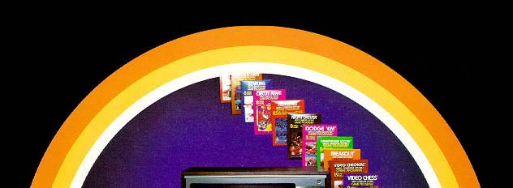
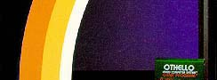
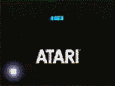
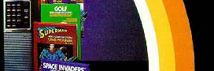
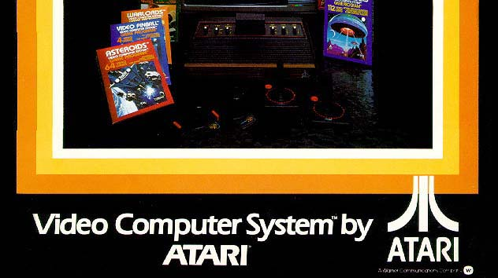

|  | ||
|  | ||
|  |
In late spring and early summer of 1983 Atari and Nintendo began a flurry of talks about having Atari license and package the Nintendo prototype "FCS" (Family Computer System) as an Atari video game product. This deal was nearly completed when Atari's CEO Ray Kassar was let go due to questionable Stock sale activity in December of 1982 and Atari's top management was in disarray for several months. Nintendo, lost its patience and walked away, allowing the future NES (Nintendo Entertainment System) to become a Nintendo released product in early 1986.
Click Here to read
the actual internal memo
detailing the Atari-Nintendo deal.
In the summer of 1984 the Atari Consumer and Home Computer divisions were
now in the possession of new owners previously with Commodore who cared nothing
for videogames and focused on computers primarily. In 1993 Atari
once again tried its hand at the home video game market with its Atari Jaguar
64 console, but quickly dropped the product in 1996 and the company ceased
to exist as Atari then fell into the hands of small hard disk company called
JTS who wanted nothing but the money from the reverse merger, the Atari home
console presence was dying a painful death. In March of 1998 the
rights, licenses and technology of Atari's video game and computer divisions
were bought by Hasbro Interactive. Infogrames is now the owner
of the Atari rights and licenses. Infogrames has officially changed
their company name to Atari, Inc. So Atari's name lives on once
again. Check www.atari.com to see what future developments
may come from Atari's newest owners.
| Case Design Study: The Atari 2600 |
| Interview: John Marvin (Crypts of Chaos & Planet of the Apes) |
Looking for newly released Atari 2600 games?
Visit EBIvision.com
Looking for BRAND NEW Atari 2600/7800 Games
Visit O'Shea
Ltd.com for $5.00 games.